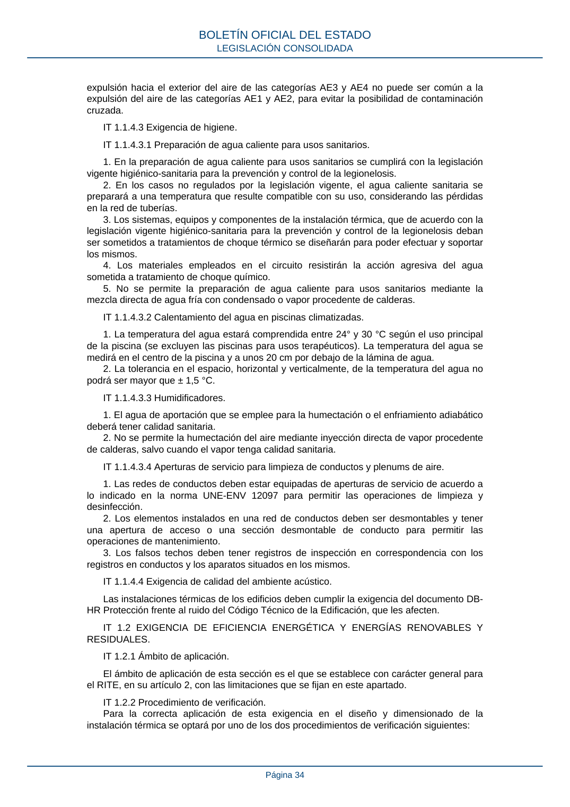

DB-HE2 RITE · edición 2022-08-02 · capa asociada
Documento RITE-asociada · SHA-256 del PDF ad1680c83bf4c7f5c656af1794c32ad0669ad9f36ac293737ff3f95177ff7b26
Página física 34 de 97.
Copia fiel del PDF fuente · Fuente oficial
Ficha de la disposición en la fuente oficial
Texto extraído y reorganizado: Basado en datos de la Agencia Estatal Boletín Oficial del Estado. PDF reproducido: Fuente de los datos: Agencia Estatal Boletín Oficial del Estado.
Formato: Texto de la página (Markdown)
expulsión hacia el exterior del aire de las categorías AE3 y AE4 no puede ser común a la expulsión del aire de las categorías AE1 y AE2, para evitar la posibilidad de contaminación cruzada. IT 1.1.4.3 Exigencia de higiene. IT 1.1.4.3.1 Preparación de agua caliente para usos sanitarios. 1. En la preparación de agua caliente para usos sanitarios se cumplirá con la legislación vigente higiénico-sanitaria para la prevención y control de la legionelosis. 2. En los casos no regulados por la legislación vigente, el agua caliente sanitaria se preparará a una temperatura que resulte compatible con su uso, considerando las pérdidas en la red de tuberías. 3. Los sistemas, equipos y componentes de la instalación térmica, que de acuerdo con la legislación vigente higiénico-sanitaria para la prevención y control de la legionelosis deban ser sometidos a tratamientos de choque térmico se diseñarán para poder efectuar y soportar los mismos. 4. Los materiales empleados en el circuito resistirán la acción agresiva del agua sometida a tratamiento de choque químico. 5. No se permite la preparación de agua caliente para usos sanitarios mediante la mezcla directa de agua fría con condensado o vapor procedente de calderas. IT 1.1.4.3.2 Calentamiento del agua en piscinas climatizadas. 1. La temperatura del agua estará comprendida entre 24° y 30 °C según el uso principal de la piscina (se excluyen las piscinas para usos terapéuticos). La temperatura del agua se medirá en el centro de la piscina y a unos 20 cm por debajo de la lámina de agua. 2. La tolerancia en el espacio, horizontal y verticalmente, de la temperatura del agua no podrá ser mayor que ± 1,5 °C. IT 1.1.4.3.3 Humidificadores. 1. El agua de aportación que se emplee para la humectación o el enfriamiento adiabático deberá tener calidad sanitaria. 2. No se permite la humectación del aire mediante inyección directa de vapor procedente de calderas, salvo cuando el vapor tenga calidad sanitaria. IT 1.1.4.3.4 Aperturas de servicio para limpieza de conductos y plenums de aire. 1. Las redes de conductos deben estar equipadas de aperturas de servicio de acuerdo a lo indicado en la norma UNE-ENV 12097 para permitir las operaciones de limpieza y desinfección. 2. Los elementos instalados en una red de conductos deben ser desmontables y tener una apertura de acceso o una sección desmontable de conducto para permitir las operaciones de mantenimiento. 3. Los falsos techos deben tener registros de inspección en correspondencia con los registros en conductos y los aparatos situados en los mismos. IT 1.1.4.4 Exigencia de calidad del ambiente acústico. Las instalaciones térmicas de los edificios deben cumplir la exigencia del documento DB- HR Protección frente al ruido del Código Técnico de la Edificación, que les afecten. IT 1.2 EXIGENCIA DE EFICIENCIA ENERGÉTICA Y ENERGÍAS RENOVABLES Y RESIDUALES. IT 1.2.1 Ámbito de aplicación. El ámbito de aplicación de esta sección es el que se establece con carácter general para el RITE, en su artículo 2, con las limitaciones que se fijan en este apartado. IT 1.2.2 Procedimiento de verificación. Para la correcta aplicación de esta exigencia en el diseño y dimensionado de la instalación térmica se optará por uno de los dos procedimientos de verificación siguientes: BOLETÍN OFICIAL DEL ESTADO LEGISLACIÓN CONSOLIDADA Página 34
